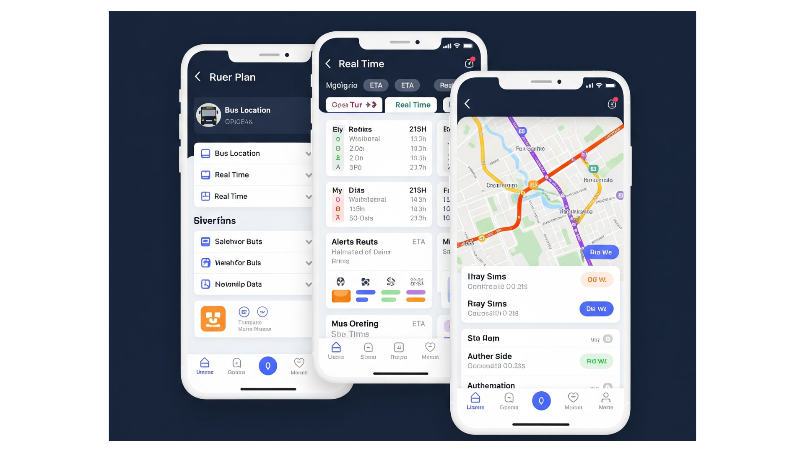
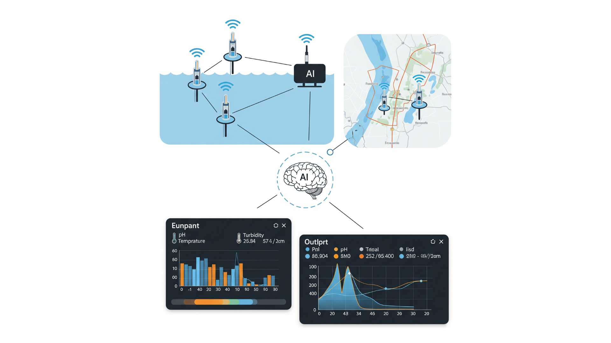
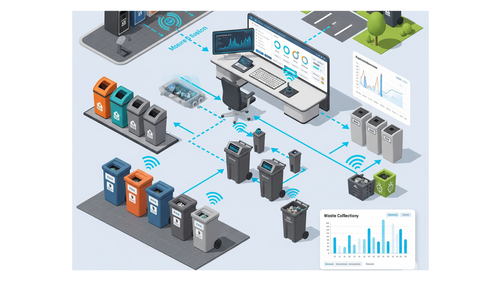
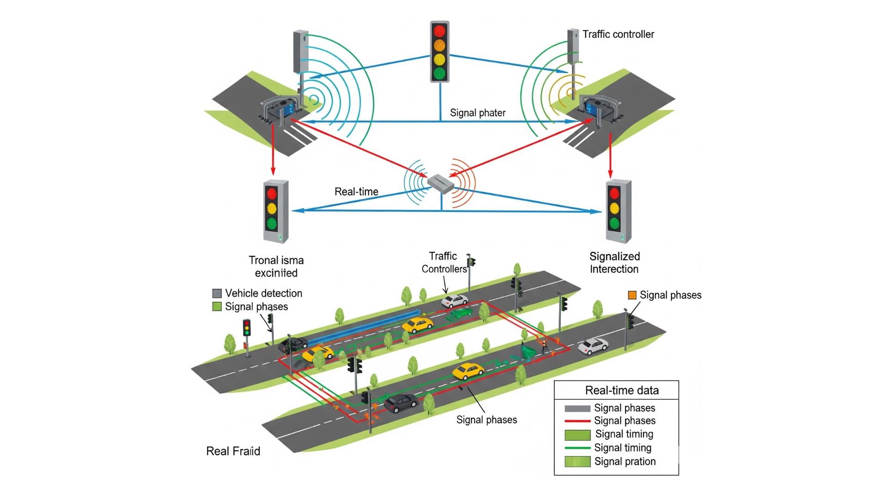
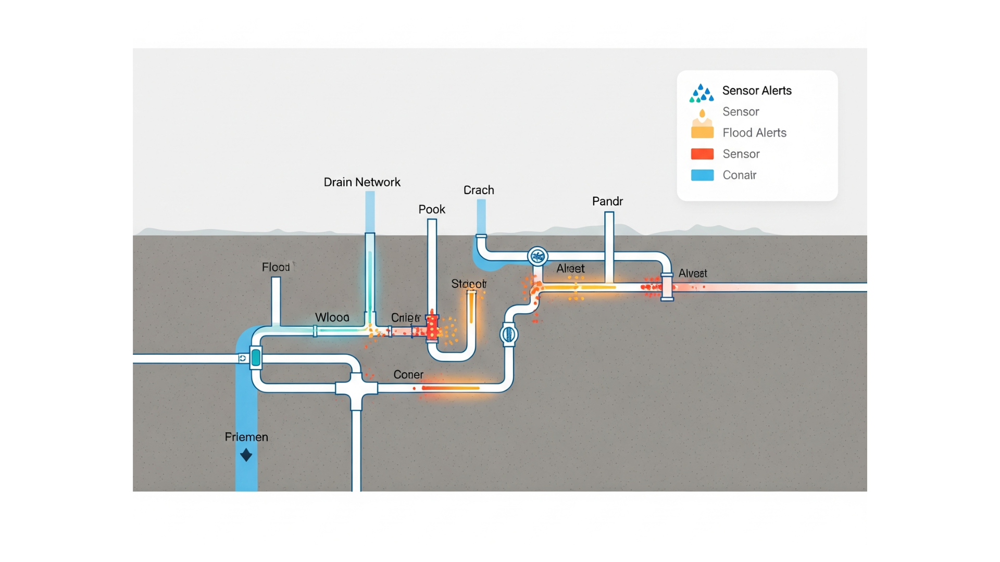

1. Real-Time Bus Tracking App
Implementing a mobile-based bus tracking system to reduce overcrowding, optimize travel time, and ensure safer commuting for passengers.
Practical and tech-driven approaches to reshape Dehiwela for a better tomorrow.
Implementing a mobile-based bus tracking system to reduce overcrowding, optimize travel time, and ensure safer commuting for passengers.

Use IoT sensors and AI analysis to monitor and alert when chemical discharges occur in waterways, enabling quick action by authorities.

Install smart bins with fill-level sensors and route-optimized collection to minimize garbage overflow and improve cleanliness.

Deploy smart traffic signals with adaptive AI to reduce congestion, especially near junctions and school zones.

Integrate sensors in drains and canals to detect blockages and rainfall surges. Send SMS alerts to residents during flood risks.
